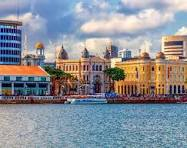

Pernambuco é um estado localizado na região Nordeste do Brasil, conhecido por sua rica cultura, história e belezas naturais. A capital, Recife, é uma cidade vibrante, famosa por seu centro histórico cheio de arquitetura colonial, pelos seus rios e pontes, além do famoso bairro de Olinda, que é Patrimônio Mundial da UNESCO, com suas igrejas, casarios coloridos e festas tradicionais. Pernambuco também é conhecido pelo seu Carnaval animado, com o frevo e o maracatu, que são manifestações culturais típicas e muito apreciadas. Além disso, o estado possui belas praias, como Porto de Galinhas, que é um dos destinos mais populares do Brasil para quem busca sol, mar e piscinas naturais. A economia de Pernambuco é diversificada, incluindo agricultura, indústria, tecnologia e turismo. A cultura pernambucana é cheia de ritmo, cores e tradições que refletem a história e a alegria do povo local. Se quiser mais informações, estou aqui para ajudar!
